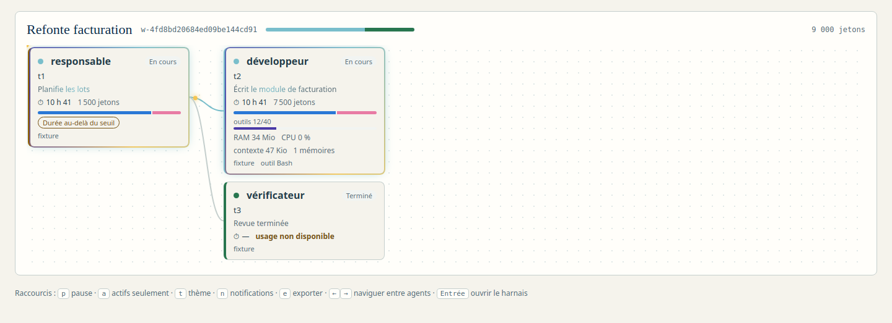

<section id="graphe" data-transition="fade" style="background:#F6F4EE;color:#14213D;font-family:'IBM Plex Sans', Arial, sans-serif;padding:128px;display:flex;flex-direction:column;gap:40px">
<h2 style="font-size:72px;font-weight:600">Chaque mission, son graphe d’agents</h2>
<div style="background:#E9E4D8;border-radius:16px;padding:24px;display:flex;justify-content:center">

</div>
<p style="font-size:32px;color:#4A5568">Liens animés vers les agents actifs · <b>Entrée</b> ouvre le harnais · flèches pour naviguer.</p>
<aside>Le graphe relie un agent à ses enfants. Les animations s’arrêtent avec prefers-reduced-motion. Couleurs de séries validées pour le daltonisme dans les deux thèmes.</aside>
</section>
